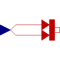

PrescribedHeatFlowPrescribed heat flow boundary condition |

|
Information
This information is part of the Modelica Standard Library maintained by the Modelica Association.
This model allows a specified amount of heat flow rate to be "injected" into a thermal system at a given port. The amount of heat is given by the input signal Q_flow into the model. The heat flows into the component to which the component PrescribedHeatFlow is connected, if the input signal is positive.
If parameter alpha is <> 0, the heat flow is multiplied by (1 + alpha*(port.T - T_ref)) in order to simulate temperature dependent losses (which are given with respect to reference temperature T_ref).
Parameters (2)
| T_ref |
Value: 293.15 Type: Temperature (K) Description: Reference temperature |
|---|---|
| alpha |
Value: 0 Type: LinearTemperatureCoefficient (¹/K) Description: Temperature coefficient of heat flow rate |
Connectors (2)
| Q_flow |
Type: RealInput |
|
|---|---|---|
| port |
Type: HeatPort_b |
Used in Examples (10)
|
Modelica.Fluid.Examples.DrumBoiler Complete drum boiler model, including evaporator and supplementary components |
|
|
Modelica.Fluid.Examples.AST_BatchPlant Model of an experimental batch plant |
|
|
Modelica.Thermal.FluidHeatFlow.Examples Simple cooling circuit |
|
|
Modelica.Thermal.FluidHeatFlow.Examples Cooling circuit with parallel branches |
|
|
Modelica.Thermal.FluidHeatFlow.Examples Indirect cooling circuit |
|
|
Modelica.Thermal.FluidHeatFlow.Examples Cooling circuit with pump and valve |
|
|
Modelica.Thermal.FluidHeatFlow.Examples Cooling circuit with drop out of pump |
|
|
Modelica.Thermal.FluidHeatFlow.Examples Cooling circuit with parallel branches and drop out of pump |
|
|
Modelica.Thermal.HeatTransfer.Examples Second order thermal model of a motor |
|
|
Modelica.Thermal.HeatTransfer.Examples Example to demonstrate variants to generate FMUs (Functional Mock-up Units) |
Used in Components (1)
|
Modelica.Thermal.HeatTransfer.Examples.Utilities Input/output block of a direct heatCapacity model |